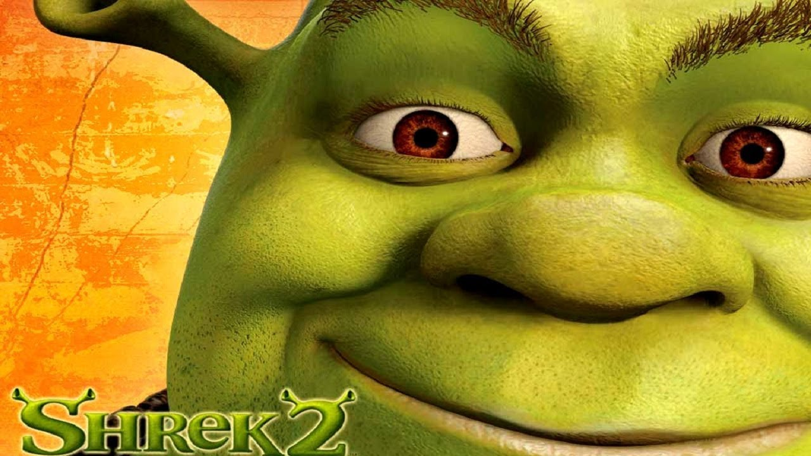
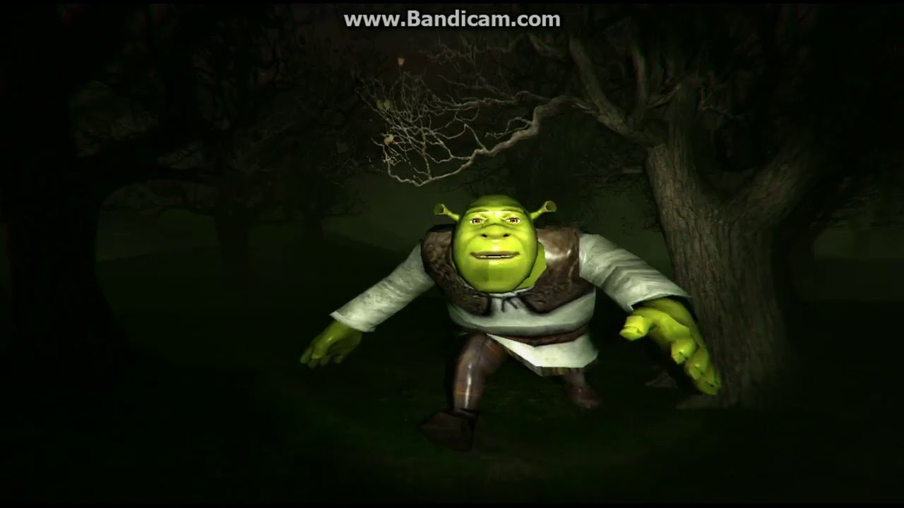

Shrek 1

Rating: ★ ★ ★ ★ ★
Rating: ★ ★ ★ ★ ★

Like its predecessor, Shrek 2 received largely positive reviews and was a blockbuster success. Shrek 2 scored the second-largest three-day opening weekend in US history at the time of its release, as well as the largest opening for an animated film until May 18, 2007, when it was eclipsed by its sequel Shrek the Third. It went on to be the highest-grossing film of 2004. It is DreamWorks' most successful film to date and was also the highest-grossing animated film of all time worldwide until Toy Story 3 surpassed it in 2010; it is now the seventh highest-grossing animated film of all time. It is also the seventh highest-grossing ticket selling animated film of all time. The associated soundtrack reached the top ten of the Billboard 200.Rating: ★ ★ ★ ★ ☆
Rating:🤡🤡🤡🤡🤡

Shrek Forever After (previously promoted as Shrek: The Final Chapter)[5] is a 2010 American computer-animated comedy film produced by DreamWorks Animation and distributed by Paramount Pictures. It is the fourth installment in the Shrek film franchise and the sequel to Shrek the Third (2007). The film was directed by Mike Mitchell from a screenplay by Josh Klausner and Darren Lemke, and stars Mike Myers, Eddie Murphy, Cameron Diaz, Antonio Banderas, Julie Andrews, and John Cleese reprising their previous roles, with Walt Dohrn introduced in the role of Rumpelstiltskin. The plot follows Shrek struggling as a family man with no privacy, who yearns for the days when he was once feared. He is tricked by Rumpelstiltskin into signing a contract that allows him to relive his golden age, but comes to realize that it comes alongside disastrous consequences.Rating: ⛥ ⛧̸̤̠̹͖͎̯̼̟̲͔̹̦̱͉̫̣̰̺̻̪̳̩͈̮̭͙̯̻̣̱̣̭̻̙̮̹̫̲̽̂̿̈̀́ͅ ̶̧͍̦̲̥̥̫͎̠͉͍͍̹̼̰̠̝̤͇͎̣͉͍͍̲͚̋̉͋̒̅͐̂̅͛̆͗͑͌͊̀͂̒̍̀̿̉̈́̀̒̀̿̀͌̐̀̎͆̄͌͐̑̀̚̕͜͜͝͝͝ͅͅ☠̴̨̢̧̡̢̢̛̩̫̟̩̟̻̹͓̩̯̥̼̪̖̱̳̞͉̳̺͍̘̞̜̘͔̙̞̣̖̪͕͉̰̄̄̓̆̈̑̅̑̎̈́̎̃̊ͅͅͅ ̶̯̣̯͕̤͛̅̄͑͛̄́̈́͊̈́̎̂͂̍͐͆̆̀̿̏̒̿͌̊̈́̈́̔̍͂̈́̿̂̕̚͝͝ψ̶̢̡̬͓̺͉͚̱͎̼̐̔̾͛̈́͋́̿̒̎̈́͆̎́̅̀̂́͐́̐͌͊͛̑̐̔̉̈́͐͆̒̏͘̕̕͠͠͠ͅ ̶̡̢̡̘̲̗͉̲̥̗͕̟͉̤̦̣̠͇̭͍͉̞̳̻̜̗̳̠͓̮̯̘̖̫͖͕͕͆̓̍̓̌̑̄͒̎̀̍͒͋̓̑̾̓̈̋̆͊̅̉̋͐̈́͊͘̕͜͝͠ͅͅψ̶̡̡̲̭͓͓̝̈́̈́͂̎̈́̒͐̈́̽̈́̏͊̀́̑̊̇̅̃͐̉͐̀͆̓̈͐̌̍̕̕͘ͅ ̶̨̢̨̢̨̡̢̣̲̬̝̣͓̫͚̭̤̞͎͈̜̰̹̳͚̖͉̯̮̼͙̯̝͚͉̹̫̦̰͍͙̬͌͗̚͜ͅψ̶̙̳͎̱̩̣̼̲̫̯͍̻͔͖̤̞̼̤̼̼̫̳̺̣̩͇̰̠̭̤̦̳͆̎̔̿̀̄͆̎͒̃̾̎͐̍́̍͂̃̚͜͝ͅͅ ̵̢̧̛̛͙̗̻̣̤̞̞̺̣͉͓̩͍̺͉̘͉͕̣̩͆͌̑̉́̈͐̿͆̎̊̾̏̍̈́̈̈́̎̈́̊̔̔̓̚͘͠⛧̴̛͖̱͕̈́̄̏̀̊̅̅̉̇̑̾̊͋̋̋̔̉́̒̇͠ ̷̢̨̡̠̖͎͖̞̥̙̲̟̙͖̪̠̤̲̯̯͚̭̫̼͈̟̠̲̭̉̅͜͜͠ͅ⛧̶̛̺̳̤̲̯̺̫͔͚͙̼̏̆̌̈́͛̏̊͒̀̑̑̓̃̀̍̄̅́̈́͑̀́̆̂̔̾͐͆̈̃͘͝ ̶̢̨̦͈̞͉̲̫͖̯̬͉̙͐̎̋̒͛͒̈́̃͊̽̈́̌̔́̈́̈́̒̃̕̚͠͝⛥̵̢̨̥͖̥̬͕̬̩̺̖̪̼̬̺̣͓̻̲͙̬̰̰̠̫̤̺͖͖̟̭͈̯̊̔͜ͅ ̷̨̨̧̧̛̛̤̫̜̜̩̣̫̣̘̱͙͕̣͓̞͔̗̘͓̰̳̳͖̳͈̪̣͇̺͓̝͚̳̦̃̄͑̔̃̉̀̒̊̇̊̈́̅͑̇͒̃̈́̐̿̏͐̑̀̐̀̉̊̿͌̋̆͗̂̚̚̕͘̚͜͝ͅ⛥̷̨͔͇̟͊̅̅̓̈́̄̾̉̀ ̶̤̝͍͔̣̠̖̮̟̺̫̑̓̐̌͑̂͆̐ͅ☠̷̨͕͔̫̥͖̆̈́̅̃͝ ̷͖͈͍͑☠̵̨̧̧̛͕͓͓͕̫̞̭̙̬̙̮͎̖͕̜̥͔͖̞͈̻̭͚̬̥̯̀̓̽̀̍͒͒̒͊̂̆̆̂̃̅͋̆̐͛̔͌̏̌̑̿̈́͑́̒̏̃͜͜͝͠͝ ̴̢̢̣̫̭̠̣̜͎͇̥̝͇̰͖͈͔̝͓͓̤̩͎͈͇̙̰̻̔͋́̀͛͜ͅ☠̵̢̧̡͙͓͕͓̦̰̤̤̪͉̮̻̬͎͔̲͉̫̘̭̙͕̬͙͎̠̠̰̝̟̳̥̦͔̱̳̫͚́́͗̈́͂̌͆̎͌̔́́̃̓́̅̓͐̌͆̀͋̄́̒̔͘͘͜͠ ̶̮̖̘̖̣̖͇͓̣̤͆̋͂̉̋̂̐̆͋́̄̄͐̈̑̀̓̾͘̕͝͝͝͝⛥̶̨̛̰̠͔̬̤͕̳̫̰̮͈̥̗̮̳̤̫̝͎̰̰̼̤͎͙̲̮͔͍̬̪͔̪̟̪̱͓̟͚̏̉̓̃̄͒́̌̎͛̅̓̐͋̅̊̉̊̑̏̀̔́̔͒̈̉͗́͘̚͜͝͝͝͠͝͝͝͝͝ͅ ̴̘̅̄☠̸̡̧̡̧̨̹̣̭̤̣̹̰͖͙̣̠̱̞̰̖͕̲̰͔̙͙̞̟̦͚͚̬̊̓͑̾̀̈́̑̍͒́̑͌̑̾̾̽̎̄́̄̐͊̓͊̾̅̈́͘͘̚͝͝ ̸̡̢̨̨̹̺͓̺̹͕̥̗͖͙̱̖͔̝͓͒̅̉̽͒͊̏̄͂̉̈́̓̈̆̈́̐̀̾̚̕͜͝☠̷̛̻̺̱͚̦̣̞̝̱̼͑ͅ ̷̨̛͓̟̼̜̳̗͍̺́̐͆͗̈́̋̾̂͂̽̈̓͊̋̈̓̅̔̂̈́̌̅̉̑͘̕͝͝͝͝͝͠ͅ⛧̷̡͙͓̰̹̼̙̱̖̖̺̝̺̳͓̗̹͖͕̗͕̆́͝ ̵̨̡̡̢̧̳̼̫̻̱̖͇̪͕͕̝͔̞͖̗̙̻͖̲̹͉͉̝̜̗̱͉͈͕̖̺̤͎̣̹̖̓̐͆́̓̐̑̆͐̔̅̾̈́̓̌͆̓̆̑͊̊̔̾͂̀̂́̉́̑̆̓̿̈͐̚̕̚̕ͅ⛥̷̧̢̢̡͈̙͉̝̲͓̤͓̮̟͔̺̟̬̝̠̰͍̬̣̥̼̳͔̱̄̆͐͛͂̀̇̊͗͗̀̇͌̾͗́̋̏̎̊̂́̀̃̃̈͊̔̽̀̉̓̚͠͝͝͝ͅͅ ̸̨̨̡̛͓̗͍̲̘̲͉̻̠̖̙͖̘̪̠̪̳̝̂̍͊͛̃̿͒́̓͆̇̈́̐́̈́̄̃͂̾̐̇͂͂͌͋̄͘͝͝͝ͅ☠̸̢̡̡̨̢̢̢̩̝͎̮̼̘̤̙̻͖͔͎̼͉̭̩̞̰̯̲̼̮͗́̃͆̈́̓̏̽̓͗̎̽̆̈̒̿͘͜ ̷̡̢̹̰̮̥̂☠̵̣̤͓̅͊͂̀̈́̍̅̓̋̊́͗͛̀̉̈́̀̓̑̀̈́̋͐̓̈́̈́̆̏͘ ̷̧̡̢̛̼͖̫̯̪̳̺̞̗̫͖̫̱͚̱͔̣͙̲̗͚̣͖͗̈́̋̉͐͒͌͛͆͛̔̿̑̒̇̐͠ͅ⛧̶̡̭͍͖̗̠̭̪̠̘͈̤̺͖̩̲̲̗̖̣͚̤̤̥͐͗̃̑̿̓̔̈́̓̆͜ͅ ̵̨̡̻̻͙̹̩̺̘̺̮̱̮͚̭̮̦͚̬̖̤͓̙͖̩̯͖͚̿̿̀̎̾͆̃̔̍̆̈̇̔͘͜͜͜͝⛧̴̢̨̢̡͇̪̜̺͈͚͍̙̦̭̜̫͈̤̌͊̏͒̒͛̏̎̈́̉̎͊́̓̅̉̆̈́̓͐͑͒̍̈́̕͠͠͝͠ͅͅ ̶̢̯͈͚̬͓̫̞͈̺̹̭͙̝̹͂̃̋͐͑͛͑̈́̔̚͘͠͠͝ш̶̡̧̰̝̳̫͚̘̘̦͕̘̘̼͍̠̱̗̝̟̥̩͈̩̦͉̹͓̣̰͚̲̹͔̓͐̏̇̎̀͂̔͌̿̎͊͑͌̑͆̍̚͝р̸̡̖̘̤̝̳̝͍̭͕͖͎̯͔̗̮̖̭̲̤̙̟̺͍̠̬̘̲͙̳̦̳̞̫͍͉̰̬̑̑͜е̶̡̨̧̛͕̭̖̩͎̪̥̩͓̯̺͓̞͈̞̟̺͈͓̗͕̥͉͓̝̖̫̹͈̗͙͉̣̼̞̓̓̑̐̄͋̍̋̇̓̏̋̀́͐̍̿̿̿̊̉͌͒͆́͑͌̋͆́̿̑̉̎̏̏̆̕͘̚̕͜͜͝͠͠к̸̡̡̛͍͕͓̬̬̮̖̹̹̈́́͑̏̾͌̇̑͂̈́̀̈́̃͋͛̊̀̈͑́͊̅̅̀̐̄͌̇̚̚̚͘͝ͅ ̶̨̧̫͚͔̥̺̦̠͙͉̞̩͛̾̇̒͜ў̶̢̨̢͎̣̣͉̪̯̭̝͍͖̲͎̦̜̀͗̈́̀̏̏̎͂̃м̵̨̡̱͈͉͔̣̠͓͕͔̯̞̠̗͕̻̞͕̪̦͚͉͍̐́͜ѐ̷̡̣̯̤̥͉̝̗̯̱̃̈́́͋̀̿̈́̌͗̾̊̏̂̇́̎͒͗̃̂̑̈́р̶̧̨̮͖̟̬͇̠̳̳̣̜̩̣͚͙͖̮̰͖͍͈͍̜̲͉̫̱͖͓͇̪̜͐̀̆͌͊̍́̐̐͒̃̓̃̀́̔́̄͆̆̇̐̆͐̉͛͂̑͐̌̆̉̚̕͜͝͝͝͠,̵̢̧̡̪̫͇̪̙͖͓͓͍͉͇̫̜̜̝̰̆̏̃͆͗͗͐̆̇̽͑̀̇͗̂͆̊̅́͋̽͂́͜͝͝ ̸̛̛̛͕̺̺͙̾͑͛́́̉̎̿̑͑͆͛̋͋͂̓͌̃́̓̀̒̔̑̄̍̆͠͝л̶̛͓̻̫̺̭̲̼͇̼̱͖͚͉̮͉͎̭̣͎̪̩̤̣̻̹̭͇̜̱̯̑̓͌̀̕͜е̵̡̨̛̝͔̼̫̹̠̰̟̠̱̙̺̭̗̝̩͎͇̞͖̙̩̪̦̳̤̣̠̗̭͓̪̗̱̮̬͓̋̍̓̽͑̓̕͜ͅͅͅт̴̨̡̱͚̜̲̟̠͗̍̍͂͆͋̌̊̇̋͊̑̒̐̆̽͂̆͋̿̎̿̋̎́̔͐͐͐̌̓̔̀̿̎̈́̌̚̚̚̕͘͠͠а̷̧̛̹̖̗̤͇̮͍̝̺͙̺͍̪̯̼̪͈͈̻͎̙̜̤̹̮̩̠̠̫̖̼̝̣͈̱̜͔̥̻̖̔͊̅̅̉̉̇̏̉́̏͒̍̑̌̌̽̀̍̏̇̾͗̋́͐̍̔̍̒̍͝я̶̡̢̢̡̛̛̛̩̺̲̠̬̥̤̱͈̱͚̯̙̙̗̬̬͖͓͚͓̣̹̪̫̐̄̀̈́͛͒́̀͒͌͋̾͗̎̋̾̓̿̔̇͂͂̌̐̏͋̎̍̿͋̕̕͜͜͜͜ ̷̨̧̧̢̧̛̛͕̞̙̥̗͓̳̣̤̥̻̪̣̹̯̥̗̖͎̠̞̫͇̹̳̩̤̩̦̭̹͉̖̫̠͎̘̑̐̄͋̅̓͂̔̏͛͐̈̄̈́̀̌̈́̓̈́̈́̄͂̚̚͜н̸̘̙͚̦̱̯̣̰̰̰̬͚͙͕̳̬͈̜̻͚̠͉͔͚͍̳̹̭̳̼͈̈́̀̅̂̈̓̒̊͐͂̋͆̎̀́̄̄̍͐̇̔̎̄͂͂̾̎́͊̑̈̆̆̕͘̚͘̚̕̕͝͝͝͠ͅа̴̧̡̧̫̫͖̩̖̩͙̣̩̥͙͖̱͎̼̘̺̬̲̝̩̻̬͔̟̠̫̟̙͎̯̩̜̮̬̰̙͇̝͆͜ͅ ̶̳͉͎̺̼͍̥̭̻͕̗̦̥͈̦̅̀͊͛͒͛̓̔̂͛̍͑̀͑̄̒̉̿̆͛̇̂̀̽́̔͜б̷̡͍̭̝̞̭̰͙͓̩̩̮̳̻̖̄̀́̐̆̈́͑͛̽̍̇̎͆̓̋̑̄̃́̓͆̒̉̀̇̚͘̚̕͝͝и̴̠̝̻͙͈̤͈̘̺̖̣̥̲̱͉͓̬̍̾̉͌͂̋͒̀͒͑̇̓́̄̏̔̎͛̊̀͘͝ͅт̸̛̛͍̿̊̏̈̅͒̔̄͋́̔̀͆̀̄̑̏̎͑̌̇͂́͛̉̈́̓́̒̊̄͘͘̕͘͘͝͝о̸̡̬̣͈̗̥̦̳͖͎̺̗̫̫̼̌͑̊́̀̀́́̃̿͂̂̍̔͒͊̐̍̽̅̊̑̋̑̈́̒͒͊͊͛̑̚̚̕͜͝͝͝в̵̡̡̛̲̤̖̹̱̪̱̯͈̮͓̖͈̫̗̗͕͓̗̰̦̗̳̩̲̯̱̫̠̣̜̆́̀̿̈́̓̀̄̔͊̃͋̀́̋̓̏̑̂̏̓̓̕̕͘͜͜͝͝͠ͅы̷̡̜̮̞͕̐̎̌̑͒̀̃͑̐͗̽̐̿͋̃̓͒͒́̍͂͊̕̕̚х̶̢̨̛̛̖̪̝̳͇͓̼͓͉͈̣̜̥̗͈͔̰̙̟̪̩͎̭̖̻̼̥͈̜̰͇̭̮͙̙̖͖̩̦̩̑͋̀͆̉͛̑̈́̎̿̈͋͂̎͋̉̓́̉̿̋̎̓̔͜͝͠ ̷̛̜̘̞̙̤̺͊́̔̋̉͆̾͋̌́̒͒̂̂͊̿̃̋̿̐͊̆̈́͛̂̊̏̓̚͘̚͘̕͝ц̶̡̛̲̩̪̥̹̯͇̲͚͉̞̻̠̝͇̱̲̱͍̭̳̦̦͕̫̳̲͉̠̜̺̯̯̱͚̯̺̾́̽͒̊͋̎̐̐͋͐̃̌̌̌̐̎̔̊̏͑͊̓͛͘̕̕͜͜͝ͅͅе̶̨̢̡̢̹̬̳̳̲͔̞̘͕͎̙͎̜͇̟͚̜̩͕̱̗̘̺̲̻͖͑̑̅͋̈́̈́̀͋̀̄̃̋͌̉͑̍́̐̓̿̋̂̋̚͜͜п̶̛̛̙͚̗̞̲͋̍͗́̏̎̀̌̈́̄͐͛̄̐͋̃̄͆̍̾̍̄͛̑̈́̒͘̚о̴̧̡̛̲̘̜̻̜̪̫̜̦͔͙̺̣͔̩̥͎̱͙̪̪̓́͋̄͒̾̓̉̏̒̄̀͌̇̋̓̉͂̚͜͜͜͝ч̵̢̡̛̛͓̙̟̬͇͉̦̲̠͙̲͎̺͇͔͓͎̮͓̩̎̈̽̏̒͐̔̿́̑͆͊͌̓͐̓̓͒͌̄̿̃̒̚̚͘̕͘͠͝к̷̡̧̡̘̗̼̙̗̖̜̹̰̙̣͔̦̗̝͙̗̣̰̹̳̬̖̞̬̩͋̒͑͑͜͜͜а̵̡̥̼͉̪̬̲̺̳̰͚͒̋̑́̃̃̉̎́̀̚̚͝х̴̨̧̛͍̲̮̞̭̜̦̋̆̎͒͋͆́̄͋̃͑̀̈͗͆̀͋́̈̑̏̀̂͑̔̅̽̽͐͂͠͝ͅ ̵̧̛̳̫̝͓̰͓̺͓̳̜̟̺͕͇͌̇̆͗͒̌̉̃̓̐̌̀̄̍̐̀̍̆̀́̍̈́̈́͑̔̔̎̋̒̒͐̉̍̕͘͘͠͝͝͠͝ͅ☠̸̛̪̙̺̙͎́̏̏́̀̈́͋̇̌͆̚͠ͅ ̵̨̨̟̠͈̱͓̹̬͍̳͎̟̺̲̬͈̞̭̤͙͇̻̗̑̈́͊̓͋͆̆̈̓͆̐̐̍̃̏͜͝ͅ⛥̸̡̢̛̠͔̥͍̦̘͓̞̺̼͔͓͉͔̣̣͎͙̩̺̭̘̖̫̲̩̬͍͖̜̰̘͆̄͌͋͆̒̾̈́̐̊̃̃̎͌͊̾͜͝͝͠ͅͅ ̸̛̺̭͔̺̯̞̭̜͈͉̝̭̲͊͒̽͐͒͐͊́̈́̇̓̌͌͑̿͑́́̏̈̈̌͗̅͛̃͒̀̒̊͜͠ψ̵̢̨̧̝̪̤͎̮͉̹̱̯͈̲̬̳͙͓̰͇̤̬̞̜̓̇̏͘͠ͅ ̵̢̢̫̣̜͓̘̺̟̘̄̄͆͑̊̈́⛧̶̨̨̢̧̨̨̢̛̖͈̜͙̩͈̰̻͚̣̮̻̳̙̹͈͉͚͍̠͕͇͉̤͙̥̰̩̯͎̺̬̻̣̺͉̊̆͗͑̔̿̂̾̔̽̀̾̐̑͋̕͜͜͝͝ ̸̛͚͈̜̟̞̲́͋̒̐͆̿̋͗̇̂́̏͛̋̽͐̊̊̉͛͗̕̕̚͘͝͠͝⛧̷̧̧̧̧̧̣̜͕͕̹̳͍̤̗̝̗̜̺̥̯̝̪̩͎̺̬̖̭̟͔̘̫̰̋͂̋̈́̉͘ ̵̨̢̢̭̖̼̜̗͚̳͍͎̪̬̞̰̼͈̘̬͚̳̩̤̗̖̳͖͕̥̭̹̣̘͒̽̊̔̉́͋̾͒̉̑̊̇̂̋̐̾͂̇̓̃̅̓̒̋̓̓̽̓̀͑̚͘̕̕̕͝ͅ⛥̸̧̛̛͎̟̬̟̻̪̩̮̻̯̙̱̹̺͖̙̮̠̥̜̃̓͂̊̓̽̃̎͒͋̍̎́̆̑̌̓͠ͅͅͅ ̵̡̡̡̛̛͎̙̱̼͗̉̑̉̀̈́͌̎̾̄͛̈͋̈̂̈̊̐͋̓̃́̋͆͂̋̈̓̽͋̉̎̚̚͝☠̴̧̡̡̢̛̣͉̪̳̥͚̪̤̬̱͕̗͖̣̳̖͎̪͙͈̱̜̰̱͑́̎̾̄́̊͒̈̈́́̋̓̈́̈͌̓̈́͊̓̆̋͒̊̔́͊̽̋͌͊̀̚̚͘̚͠͠͠͝ ̸̢͇̲̗̣̖̺̣̱̙͚̞̲͉̗̤̠̟̦̩̼̱̐̽͆́̀͂͒̊̂̾͌̏͂̒̾̓̋͆̓̕͝ͅ☠̸̛͔͖̥̟̮̞͇͓̹̞͚̭̫̮̗͙͚̟̈́̈̒̉͆̋͋̆̓̏̈́̆̈́͛̆͊̾̌̾̿̂̍̏̚̕͝ ̷̖͎̦͔͓̞̱̪̱͚͎̯̬̳̳̱̜̯̰̝̩̙̙̫̻̥̝̤̩̰̞̤͔̺̘̿́̐̀̑̐̓͒͑̂͌̕͘ͅ☠̶̧̥͎̫̯̹̦̳̘͈̠̯̜̫̠̭͊̃͊͒̔̂͌̒̿͂͒̿̿̀̄̑̒̓̓̀͝ ̶̧͍̠͈͎̞͇̰̦̱͉̲͈̗͇̪͍̪͔̙̖̥̼͖͚̺̏☠̵̨̨̡̧̧̢̧͕̝͓͙͎̤̗̥͍̼̭̟̖̱̟̟̹̲̥̝̲̰̞̲̲͇̱̹̯̪̬̤̝͉͆͗͗̄͂͑̍̈́͒́̾̈́͂̉̎̒̍̈̊̓̑̋͗̎̓̑̚̚̕̚͝ͅ ̴̲̯͍̘̭̘͓̱̦̞̳̥̝̼̣͂̋͋͐́̌̔̈̉́̑̂̈́̍̄̃̒̈́̐̓̇̎̉̄̑̒̐͋͌̽̃͗̚͝͝͠͝͝⛥̵̢̡̢̨̛̛̛͓̩͙̝̦͇̹̼̹̰̹̣͙̫̣̯͙͙͓̹͎̮̳͈͑̍̿̆̑͛͊̅̉͑̽͂̓͐͆̋̿͑̂͂́̈́̓̀̓͑̃̈́̓͐̋͘̚ͅ ̵̢̨̡̛̖̺̫̘͙̳͙̗͍͇͔̭͉̖͕̲̙̰̳̪̺̗͔̖͔̩̘̣̈͒̀͌͗͜ͅψ̶̨̡͇̹͇̝̲̠̜͈͎͇̞̬̣̻͖̟͈͔̟̦̺̲̤̞̳̙̦̮̭͕͎͍͓̹͕̻̹̩̻̩͇̎̂͜ͅ ̸̧̡̡͍͕̺̟̜̱̺͈̰̲̳͇̘̭̼̖̹̣̗̯͙͔͉̤̻̰̘̺̟̣̤͈̝̖͙̣̭̘̝̭̳͛̉̒̈̊̎̃̕͠⛥̴̨͎̮̬̠̱̣̘͆̉́̋̀̒̀͑̊̀̐͂̽̽͐̇̒̑͊̔͒̑͛̅͑͛̌̕̕̚͘̕͘͝͠ ̵̛͍͇͗̈́̉͐͗̀͗̀̌̈͆̇̄̈́́͂͂̓̆̔̈́̏̇͐̅̇̇͆͘̕͠͝⛧̷̡̧̪͇̣̞͈̗̜̳̠̩͎̭͚̣̂̍͂͗̇̎̆͂̀̑͐͐̆͐̾̑̈́̂̍̒̃̓́̈́̍̈́̉̾̏͘̚͘̚͝͝͠ ̴̢̧̡̢͙̖̝̥̲͎̪̞͈̞̳͇̪̭͚̻̯̤̞̰͍̤̬͖̞͉̘͚̖̠͔͔͈̪͙͍͌̊̇͗̐̎̍͋̓̀͂̽̓̈́̓̽̇̉̕̚͜͜͜ͅͅ⛥̸̨̧̟̣̱̠̙̪̹͓͓͙̳̝̩̥͇̠̺͈̫̬̺̻̣̭̲̤̫̲̼̖̥̩̆̊̌̈́̈́̎̋̎̌͛̂̾̉͐͛̀̇̂̂̉̊̕͘͘̕͘͜͝ ̵̡̢̢̢̢̨͙̫̲̜͕̤̼̙̤͖̘̻̝̟̖͈͕̺̗͉̦͕̝̱̞͚̗͙̔͜͜⛧̵̢̧̢̨̛͇͖̮͇̰̯͕̦͇̬̮̯̻͕̣͍̲̙̹̣̫̰̯̬͙̝̘̯̜̫͕͓̩̖̦̤͙̻̗̈̀̔̃̓̃̀̓̎̒͒̌̈́̇́̓͑̀͂̄̀͂̀̍͂̕͘͜͝͠͝ ̷̢̫̫̤̟̬͐͋̀̈́͂̀̇͘̚͝͝⛧̸̧̨̨͇͖͇̤̹̪̲̻̤̥̜̤̲̪̙̯̲̦̔̊͋̎͂͂̽̈́̌̂̂̀̐͐̏̒͊͒̒̄́̋̋̔̊̀̑̓̚̕͜͝͠͠ ̷̧̨̢̘̺̜͚̼̖̯̮͇̙̲̟̝̮̥̏̈́̅͛̽͜͝͝☠̴̡̨̛̬̗̞̤͇̣̪̬͕̟̟̩͚̞͓̣̱͓̀̄̈̉̎̈͋̀͋̓̒̓̏̄̒̆̉͆̓̋͊̓͐̑̐̅̑̓͋̂͐̓̊̊̕͜͜͝͝͝͝ͅ ̸̧̨̢͎̹̦̫͚̲͇͋̈͛̏̑͋͒̍̐͂̈́́̍͑̒͌͗̈̋̉̉̈́̀̈͂͐̂̽͊̅̏̃̉̈̀͘̚͜͝͝͝͝͝ͅψ̶̧͍̠͙̼̯̮̭̖̪̳͍̞̪̩̫̤̬͊̔̓̇̓͑̇̍́͌͗̐͘͜͜ ̴͚̱͕̹̼̳̜̪͚̮̩̀̓̊̎̊̄̆͗́̽̑̀̾̔̈͊͋͐͘̕͝ͅψ̵̢̨̨̧͔̲̗̥̫̰̘̤͖͇̟̥̮̠̞̭̜̯͇̟͇͚͓̰͓̹̖̭͉͇̺̩̗̙͕̻͖̹̗́̿̆͠ ̸̡̬̹̱͙͕̮̣͚͕̱̥͚͎̗͛̾̄̽̈́̐͜ͅ⛧̷̢̧̛̛̦̺͖̼̰̖̩̳̜̗̬͓̫̻̦̞̝͚̼̻̞̬͔̭̰̏̓̐̂̽͑̂͗̐͐̑̉͛̇͑͌͊̔̋͗͗̋̃̕̚͘͜͝͝͝ͅ ⛥